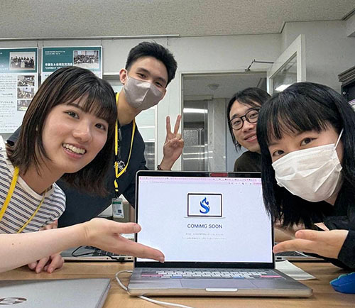

- Q1.
この学科を選んだ理由は何ですか？ - HTMLの勉強を一通り終えて、
CSSの勉強を始めたところで入学しました。
- Q2.
入学する前にしたことは何ですか？ - 日本人を自然に会話できるようになることを目標に、
日本語の勉強に集中しました。
- Q3.
その希望職種にした理由は何ですか？ - 母国の専門学校で1年間勉強していたとき、チームでの活動を通して、
みんなで協力して一つの成果を出すことに大きなやりがいと
面白さを感じたのがきっかけです。
- Q4.
言語の壁を感じた時がありますか？ - JEC WEEKのとき、日本人の学生が思っていたよりも
早く話すので驚きました。
- Q5.
学校のどこで何をしている時が好きですか？ - 放課後、実習室で作業している時間が好きです。
決められたことをするのではなく、自分の好きなことに取り組めるからです。
- Q6.
初めて授業を受けた時、
想像したのと同じでしたか？ - はい、想像していた通りでした。
- Q7.
学内・学内の活動でこれはやって良かったことが
あったら教えてください！ - スポーツフェスティバルのサイト制作チームに参加したことです。
ちょうど企画書の授業が始まったばかりで、ワイヤーフレームやモックアップの
作り方も学んでいなかったので不安でしたが、
先輩たちが作った過去の作品を見ることで勉強になり、とても楽しく取り組めました。 
- Q8.
バイトはしていますか？
していたら週に何時間働くのがいいと思いますか？ - 現在、週に20時間アルバイトをしていますが、
後期はもっと忙しくなるので、勤務時間を減らす予定です。
これからこの学科への進学を考えている皆さんには、できるだけ
アルバイトをしないことをおすすめします。
- Q9.
授業外、必要とされる学習時間と課題は
どのくらいあるか教えてください！ - 勉強と課題を合わせて、1日2時間くらいで対応できると思います。
- Q10.
この学科が自分の適性や興味と合うと思ったことと
合わないと思ったことを教えてください！ - この学科の特徴として、新しい技術やトレンドを常に学び続ける必要があります。
ですが、私は新しいことを学んだり、自分で試してみたりするのが好きなので、
そういうところが自分に合っていると感じています。